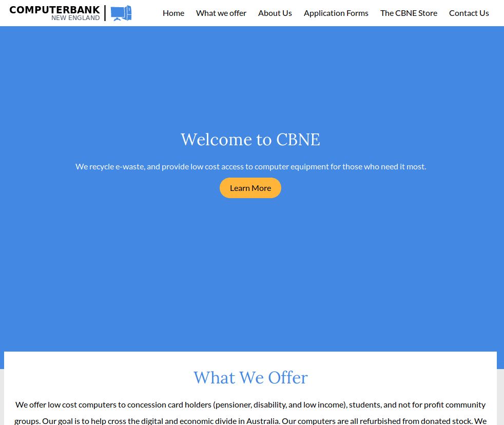

Justin Taylor
ComputerBank New England
A complete redesign
June 9, 2017The original ComputerBank New England site required a complete redesign and rewrite. The original site had been layed out using html tables, and the content was fractured across multiple pages. Given the site's small amount of content, and specific nature, I designed a single page site as a replacement.
The resulting site is modern, and mobile friendly with clean and concise code. I also rewrote the content to be clearer and more in line with the goals of the organisation.
Checkout the new site here